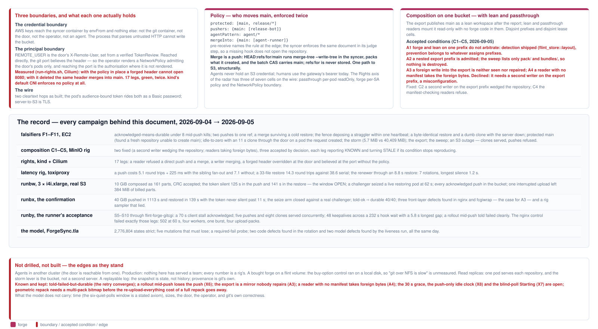
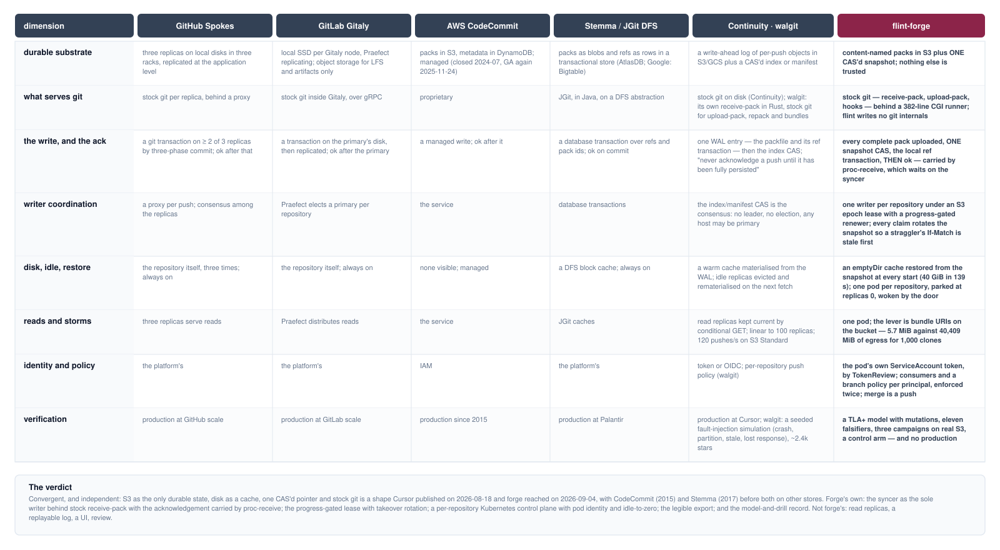

A git server per repository with S3 as its only durable state, drawn as three planes: the data plane every byte of a clone or push crosses, the durable path that alone can write the bucket, and the control plane that places, admits and keeps the server alive. Each component sits on the planes it belongs to and no others — and the runner that replaced nginx and fcgiwrap sits on the data plane alone.
Scope. The architecture of flint-forge as built and drilled through 2026-09-05: the components, the flows between them hop by hop, the transaction that makes an acknowledged push durable, the single-writer lease and its takeover, the operator and the door, the boundaries the planes draw, the campaigns that stand behind every number, and where forge sits beside its prior art. It is a description of what exists, with what was measured and what was refuted; it proposes nothing.
Sources of record.docs/plans/flint-forge-design.md (the design, its decisions and its review), docs/plans/flint-forge-simplification-2026-09-05.md (the party table, the defect list X1–X12, the runner), formal/ForgeSync.tla (the theorems and the mutations), forge/e2e/scale/README.md (runs 1–7 on real S3), forge/e2e/latency/, forge/e2e/composition/, forge/e2e/run-rights.sh, and the code under forge/syncer/, spdk-csi-driver/src/forge_operator/ and spdk-csi-driver/src/lite_gateway/git.rs. Where this document and the design disagree, the design's dated corrections win; where it and the code disagree, the code wins and the document is wrong.
Regenerating.docs/architecture/forge/forge-diagrams.py writes every plate with the family deck's kit (docs/architecture/diagrams.py); docs/architecture/forge/build.sh validates, measures every label against its box in Chrome, renders the PDF and extracts the Markdown. Diagrams and the Markdown are built, never edited by hand.
Revision. Tree be76cc9c and its successors of 2026-09-05: the TLA+ model with the two rotation fixes it found, the flint-forge-gitcgi runner accepted on cluster runby, the concurrent-clone leg. Nothing in this document has served a team; every number is a rig's, and the last page says what that leaves out.
1 · The three planes — every component placed; the membership matrix; the two boundaries the placement draws.
2 · The data plane — a clone and a push hop by hop, the parties and their bounds after the runner, and what run 7 measured against the nginx control.
3 · The durable path — one batch as one transaction, what S3 holds, the theorems, the residual, and a restore from the bucket alone.
4 · The lease — a holder's life, the challenger, the renewer's sensor, what the model found in the rotation, and the window before and after.
5 · The control plane — the operator's three objects and one rung, the door's five steps, what it never touches, and what is open.
6 · Boundaries and the record — credential, principal and wire; policy enforced twice; composition on one bucket; every campaign with its numbers; the edges.
7 · Prior art and the verdict — Spokes, Gitaly, CodeCommit, Stemma, Continuity and walgit beside forge; what is convergent and what is forge's own.
The three planes
1 / 7 · placement
Forge is stock git in a pod, a stateless door in front of it, one syncer beside it, and a bucket behind it. The same components look different depending on which question is asked of them — where do the bytes go, what can change what a restore sees, who decides that the pod exists — and those three questions are the three planes. A component can be on more than one plane; the plate's matrix says which, and the point of drawing it is that the answers do not overlap where it matters: the process that parses untrusted HTTP is not the process that can write the bucket, and the thing that places the pod never reads what the pod stores.
The data plane is every byte and nothing durable. A clone, fetch or push is the ordinary smart protocol from a stock client to stock git. The agent's credential helper presents the pod's own projected ServiceAccount token as the Basic password; the door verifies it and routes; the runner in the git container execs git http-backend once per request and streams the request body into it and its output back out as each arrives; receive-pack and upload-pack do the git. Nothing on this plane holds a bucket credential and nothing on it is durable: a pack received is on local disk, which is a cache, until the durable path has named it. The runner (flint-forge-gitcgi, option A3 of the simplification note) is on this plane alone. It replaced nginx and fcgiwrap after the runbx drill found three of its four front-layer defects in those two processes — buffered keepalives that cut a 40 GiB push 311 s into its hook wait, two 60 s client-side timeouts nobody had listed, a four-worker ceiling that queued in silence — and because it implements no git and touches no bucket, replacing it moved nothing else: the chart, the CRD, the door's URL formula and every rig were unchanged.
The durable path is what can write the bucket, and it is one process.proc-receive is the only place the data plane hands anything to the writer, and it hands a request, never a credential: it sends the push's commands and its pack's name to the syncer over a Unix socket and waits. The syncer judges, renews the lease once, uploads every complete pack as an immutable content-named object, CASes one snapshot naming the refs and the packs, applies the local ref transaction and only then reports ok. The credential exists in the syncer container only, by envFrom. Page 3 draws the transaction and the theorems that hold over it.
The control plane is placement, admission and liveness, and it never reads the bucket. The operator turns a FlintRepo into a ConfigMap, a headless Service, a one-pod Deployment and a NetworkPolicy, polls the pod's own /status, and parks an idle repository at replicas 0. The door admits by TokenReview and spec.consumers, routes by repository, and wakes a parked one by annotating the CR and waiting on it. The lease cell in S3 is the writer's coordination — a token that must keep moving, six quiet polls before a takeover, a rotation of the snapshot on every claim — and it is placed on this plane because it decides who may write, not what is written; the fence it produces is what the durable path relies on. Two boundaries fall out of the placement: the credential boundary between the two containers of one pod, and the principal boundary, where X-Remote-User means something only behind the NetworkPolicy that admits the door's pods alone. Page 6 says what each was measured to hold.
The data plane
2 / 7 · data flows
Two flows cross the same six hops: a clone or fetch, which is a request and a pack coming back, and a push, which is a pack going in and a sideband coming back for as long as the hooks take. The plate names what crosses each hop and what each party is allowed to do to the flow. The list of parties matters because the campaign kept finding defects in members of it that nobody had written down; after the runner the list is what it claims to be, and the last row shows the control arm failing each leg the runner passes.
A push is one HTTP request that can last twenty minutes, and every party on the path has an opinion about silence. The client sends the commands and then the pack, chunked; the server answers nothing until the pack is in, then receive-pack runs the hooks and, while they are quiet, writes an empty sideband packet every receive.keepAlive seconds (pinned at 5 s in the syncer's config so the guarantee does not rest on git's default). The door's inactivity clock is touched by every chunk in either direction and cuts the request after 300 s of nothing; that is the one client-facing bound, by design, and it is why the keepalives must reach the door as they are written. Through fcgiwrap they did not: it held the CGI's output until the request ended unless a patch-specific parameter was set, and the 40 GiB push of run 3 was cut 311 s into its hook wait with two keepalives arriving in one burst with the report. Through the runner (run 7, S9) a 20 GiB push's 232 s hook wait carried 48 packets to the client with a longest gap of 5.8 s; through the nginx control (the same syncer, the last nginx image) the 49 packets arrived in one burst 237.9 s after the pack. The control with keepalives switched off and the door at 30 s was cut 30.5 s after the upload ended, which is the bound being real.
The runner has no knobs it does not declare. It sets no timeout and no body limit — the door owns the client-facing bound — and it holds a ceiling of 64 concurrent requests that answers 503 at once rather than queueing. The two knobs it removed were the class the drill kept finding: nginx's client_body_timeout and send_timeout defaulting to 60 s beside backend bounds of an hour (X3), and FCGIWRAP_CHILDREN=4 (X4). Run 7 exercised each: a client SIGSTOPped 3 s into a 1 GiB pack for 70 s was acknowledged through the runner and got a 502 through the control; five 256 MiB pushes stopped mid-body held five receive-pack processes and an advertisement request beside them was answered in 0 s through the runner, where the control ran four and queued the request for 60 s; eight concurrent single-branch clones of a 1 GiB branch peaked at eight upload-packs and all landed at the tip in 51 s against 16 s for one alone, where the control peaked at four and served them in pairs. A push launched into the middle of the clone storm was acknowledged in both arms.
What the data plane cannot do is take the server out of a storm; the bucket can. A thousand clones cost about 130 CPU-seconds but 43 GB from one pod's NIC, so egress binds long before CPU. The lever is git's own bundle URI: the syncer cuts a full bundle on a floor, uploads it beside the packs, lists it in the snapshot and advertises a presigned URL that upload-pack hands to a client that opted in (transfer.bundleURI=true, protocol v2, both sides ≥ 2.40 — three conditions the first draft missed, each verified). Measured on EC2 at 1,000 clones: 5.7 MiB of server egress with the opt-in, 40,409 MiB without. Gitea on the same corpus lands level with forge's control arms, within 0.5%, which is the honest statement of what a bought forge gives up. LFS takes the same shape: the batch API runs in the syncer and answers presigned URLs, so a checkpoint goes client-to-store and the pod sees a few hundred bytes of JSON.
The durable path
3 / 7 · the transaction
The review's central finding shaped this path: under proc-receive, git's receive-pack serialises nothing and checks nothing for the commands it hands off — no old-oid check, no fast-forward test — and two concurrent pushes to one ref run their hooks fully overlapped. So the hook does not sync; the syncer does, one process per repository holding the writer lock for every path to S3, and a push becomes one step in one batch that ends with one CAS. Everything that can change what a restore sees goes through steps 3 and 4, under one lock, in one process.
The order of the steps is the argument. Packs go up before the snapshot names them, so a crash between the two leaves an unnamed object the sweep removes, never a name without an object; the snapshot is one object carrying every ref and the full pack list, so a reader never sees half a batch; the local ref transaction follows the CAS and the report follows the transaction, because per-ref ok reaches the client as it is emitted and a report interleaved with updates would acknowledge a subset the snapshot already holds in full. The pack listing that feeds step 3 requires the pack's .idx: git migrates a push's quarantine as .keep, .pack, .rev, .idx, in that order, so a neighbouring push's pack is on disk before its index for a moment, and a batch that listed it then would have named a pack whose index never followed — a restore of that snapshot refuses, exit 78, unrecoverable (X1, found by reading tmp-objdir.c, fixed by requiring the index). The CRC-64/NVME S3 judges at CompleteMultipartUpload is accumulated per part beside its PUT, so a 40 GiB pack is read once; the ~70 s pre-pass it replaced had, in its first shape, ticked no progress and let the lease go quiet inside a live push.
Five theorems hold over this path and five mutations must each lose one.formal/ForgeSync.tla models two syncers, two pushes, the batch at store-request granularity with a crash between any two steps, the renewer's byte-counter sensor kept distinct from real movement, a challenger, a successor's claim, rotation, sweep and restore, git's index-last migration, and a client that can hang up. The strict run holds 2,776,804 distinct states to depth 52 under a token-rank view and syncer/push symmetry: told ok implies the ref landed and the pack is in the bucket with its index; every landed pack is complete; the renewer never skips a heartbeat while the holder moved; no CAS lands from a deposed syncer after its successor restored; a restore never refuses. The mutations are the campaign's findings kept as regression tests — early acknowledgement, no index gate, a checksum pass that ticks nothing, no rotation, the ordering reversed — and each must find its loss or the gate fails. The model's first two strict runs refuted the code (page 4); its liveness run then refuted the model twice, a queued push left waiting by a clean release and a NoSuchUpload exit drawn from the crash budget, and the module moved.
One residual is kept rather than hidden, and the drills held the rest on real S3. A client that hangs up before the report is never noticed by the syncer, so the batch lands anyway and the bucket names a tip the client saw fail: not a loss and not a corruption — the retry finds the ref already there — but a transition the argument carries in the other direction, a required-fail probe in the model and seen on the wire in run 3 and in run 7's rollout leg. On runbx a 40 GiB push was acknowledged in 1113 s with 641 parts and the CRC accepted, and 40 of 40 pushes told ok across two takeover arms were in the bucket; four kills placed inside a multipart upload by watching list-multipart-uploads held told-failed ⇒ unchanged and told-ok ⇒ durable, and every orphaned upload was swept once the successor served. A fresh pod restores from the bucket alone: the snapshot's packs fetched by one bounded fan-out of 8 MiB ranged chunks at 38–40 MiB of memory flat in the pack size, refs installed exactly, fsck --connectivity-only, serve — 40 GiB in 139 s from the delete, fsck clean, 25 MiB of anon RSS.
The lease
4 / 7 · the single writer
One writer per repository is a mechanism, not a convention, and the mechanism is an epoch cell in S3 that every participant writes only by compare-and-swap. A holder renews it every ten seconds; a challenger judges the holder dead only after six consecutive polls saw the same token; a 412 on any CAS of ours is the fence, and the fence stops reads as well as writes, because a deposed server that kept answering upload-pack would serve stale refs forever. The subtle parts are the rotation that makes a straggler's writes stale before the successor serves, and a renewer that must stop renewing for a pod that is alive but wedged.
A renewing holder is undeposable, structurally; the whole design is about when it stops renewing. The renewer is its own task from the moment the claim lands, so the restore, every batch and every export beat through it — the first shape renewed only inside a push, and then only between the upload's parts, which on runbw left a 10 GiB push's token silent for 125 s and its restore's for 141 s, inside a 60 s window; a challenger claimed the live, importing pod 62 s after arriving and the two seized each other through three epochs while every acknowledged push still reached the bucket. The fix is gated on purpose: while the phase must progress, the renewer renews only if the operation's byte counter advanced since its last renewal, because renewing for a wedged pod would trade a live pod losing its repository for a dead one keeping it forever, which is the case the quiet polls exist for. The counter is a sensor and a sensor can lie: run 3's checksum pre-pass did 70 s of work and ticked nothing. The model keeps the sensor and the real movement as separate variables and proves the sensor honest under the one quantitative axiom it states and cannot discharge — that the challenger's polls and the holder's heartbeats share a period. On runbx a challenger beside a live 40 GiB restore for 398 s never claimed, the holder was never fenced, and 24 of 24 pushes under the contention were durable.
The rotation is what a straggler cannot survive, and the model found two ways it was skipped. Every claim rotates the snapshot — the same content, a new etag — before the successor restores, so any If-Match a straggler still holds is stale before the successor serves a byte. The first shape exempted two cases, and the model's first two strict runs refuted both against the code the same day. A takeover of a repository nobody had published skipped the rotation on the theory that the first CAS's If-None-Match would be the fence; but a straggler mid-batch on the old epoch could land its create after the successor served, and then the successor's own first CAS was what 412'd, fencing it with its predecessor's push (X11: the rotation now creates the empty snapshot). And a successor that died between its takeover CAS and its rotation came back through self-recognition, which skipped the rotation because "our own previous process died with its writes" — while the straggler from the epoch before still held a valid If-Match (X12: every claim but a released cell's rotates, because only a releaser has proven it fenced itself before writing the mark). Both are unit tests that fail against the old code.
The cell is on the control plane and its consequence is on the durable path. The operator does not read it; the syncer's own phase says what the operator needs, and restart is not an operator decision — a fence exits 1, a refusal exits 78, the kubelet restarts the pod. Two servers for one repository is not a state the Deployment creates on its own; it takes a roll against a wedged pod, a lost node whose pod is still counted, or a hand, and every such case ends with the straggler's next CAS 412ing. The open item on this page is X6: a rollout during a long push SIGKILLs the batch at the 30 s grace, and run 7 measured exactly what that costs — the client told failed, the bucket unchanged, the retry converging, the orphaned upload swept — which is clean and loses the push; whether a roll should wait for the batch is the decision still to take.
The control plane
5 / 7 · placement, admission, liveness
The control plane is the lite operator's shape, cut to one rung by copy-and-trim rather than import, and the lite gateway with a git arm. It answers three questions and only three: does this repository's pod exist and is it ready; may this token reach this repository; is anyone using it. It holds no S3 credential, reads no object, and sits in no transfer, which is why the runner could be swapped underneath it without a change to a line of it.
The operator takes the pod's word, and the word is small. Reconcile claims git/claim with this project's id — a foreign id is Refused, exit 78, judged before the pod phase so a refusal does not read as a checkout in progress — renders the three objects and the policy ConfigMap both enforcers read, applies them, and polls /status. Of the document it gets back it consumes phase (Ready is serving) and activity.idleSecs (the idle rung); lastRenewUnix, fenced, rpoClean and progress are read by nothing and are diagnostic. The status port is reachable only from the operators' namespace and the door refuses to proxy it. The idle rung is lite's ladder with one step: no git traffic for suspendAfterSecs, judged on the polled document alone — a poll failure holds forever — means replicas 0 and an annotation, the emptyDir gone, the repository bucket objects and nothing else. The rung's clock is X8: it counts pushes only, because a fetch never reaches the syncer, so a clone-only repository is parked one threshold after its wake. X7 is its neighbour: a failed poll against a Ready pod reads as Starting and takes a live repository out of rotation on a blind poll.
The door does five things in order, and the order is the security property. Authenticate: the Basic password is the pod's token, verified by TokenReview at the apiserver and cached for at most 60 s by the token's hash, a refusal cached and a transport failure not — a clone is two to four requests, so 1,000 clones would otherwise be 3–4,000 reviews. Authorise: spec.consumers must list the ServiceAccount, and a credential-less peer gets 401 and is never dialled, so authentication precedes the wake and a peer cannot scale a parked repository up. Route: one headless Service per FlintRepo, by name; X-Remote-User is set from the verified token and cannot be smuggled past the door's allowlist. Wake: a parked repository is armed by annotating the CR, and the door waits on the CR, never the pod, for up to 180 s — git clients do not retry a 503, and a wake after an unclean death is the quiet polls plus a restore. Bound: no bytes either way for 300 s cuts the request. HTTPS at the door is a line in the diagram; nothing in-tree terminates it, and the token rides two cleartext hops.
Where the planes meet is one-directional at every joint. Control decides which bytes flow at all and makes the pod they will reach; control's lease produces the fence the durable path relies on, and its grace period decides whether a roll lands as a clean release or a SIGKILL mid-batch; the durable path writes /status and control believes it, with rpoClean true by construction because nothing is acknowledged before the CAS; and the data plane hands the durable path exactly one thing, through proc-receive, a request. The control plane has had its own campaign: the published-artifact drill found that the shipped chart could not install itself, because it pinned the one image whose gateway rejected --git-only — found by installing the chart as a user would, which nothing had done — and one server.tag now names both server images with the operator warning when the two references it is handed disagree. KEDA's HTTP add-on could replace routing, wake and idle-to-zero with no flint code, but not the auth, and the gateway exists; that is recorded as a decision, not an open question.
Boundaries and the record
6 / 7 · what holds, and what was run
Three boundaries, each stated with what it was measured to hold and what it does not; the policy that says who may move main, enforced twice; composition with the rest of the family on one bucket and the four conditions accepted by decision; and the ledger of every campaign behind this document. The last card is the edges: what has not been drilled, what has not been built, and what the model does not carry.

The principal boundary is a NetworkPolicy, and it was shown to be one.REMOTE_USER is what pre-receive and the syncer read as the principal, and it arrives as the door's X-Remote-User, set from a verified TokenReview. Anything that reaches the pod's git port directly can set that header itself, and both enforcers would believe it; what stands in the way is a headless Service with no external address, the tenant's namespace, and a NetworkPolicy the operator renders — only when told where the door runs — admitting the door's pods alone. On a kind cluster with Cilium, because kind's default CNI enforces no policy at all, a forged header sent to the door was overridden, a forged header sent to the port with the policy in place could not open it, and the same header with the policy deleted merged into main: 17 legs, green, twice. That pair is the evidence that the header means something only behind the policy; where the policy is not rendered, reaching the port is the authorisation, which is defensible on a single-tenant cluster and is not on a shared one. The credential boundary is simpler and stronger: the bucket key reaches the syncer container by envFrom and no other process. Merge is a push — HEAD:refs/for/main runs merge-tree --write-tree in the syncer, packs what it created, and the batch CAS carries main — so there is one path to S3, structurally rather than by convention, and the policy that names who may propose it is enforced at the edge and again in the judge step.
Composition on one bucket is a convention across products and a mechanism within one, deliberately. The export publishes main as a valid lean workspace after the report, by the shipped flint-sync barrier, and lean and passthrough readers mount it read-only with no forge code in them. Five composition drills on a MinIO rig found five things; two were fixed (a second writer on the export prefix wedged the repository; manifest-checking readers now refuse foreign bytes) and three stand by decision — forge and lean on one prefix do not arbitrate but the condition is now audible; a nested export prefix is admitted but the sweep touches nothing outside its own two directories; a foreign write into the export is neither seen nor repaired, and a reader with no manifest takes it, because closing that needs a second writer on the export prefix, which is a misconfiguration. Each accepted leg reports KNOWN and turns STALE if its condition stops reproducing, so a record that has quietly become wrong is also something a human has to look at.
The record is what the numbers on every other page rest on, and the edges are what they leave out. Eleven falsifiers on EC2; the composition, rights and published-artifact drills on kind; the latency rig with injected round trips; three campaigns on real S3 — runbw, which opened the takeover window on the wire; runbx, which closed it and found the case for the runner; runby, which accepted the runner against a control that failed exactly the legs it had to — and the model with its mutations. Not drilled: agents in another cluster, production, a bought forge on a flint volume. Not built: read replicas, a replayable log, a UI, review. Kept: told-failed-but-durable, a rollout mid-push losing the push, the export as a mirror nobody repairs, the push-only idle clock, the blind-poll Starting, and a full repack that re-uploads the repository every 24 pushes until geometric repack gets a multi-pack bitmap.
Prior art and the verdict
7 / 7 · how new is it
The question asked of this document was how innovative forge is in capturing the git-and-S3 integration. The honest answer needs the table: five systems that put git's durable state somewhere other than the serving host's disk, one of them published seventeen days before forge's design, beside forge on the dimensions that decide correctness and cost. What is convergent is convergent; what is forge's own is smaller than the whole and is stated as such.

The shape is convergent, and forge arrived at it independently in the same month as its nearest neighbour. "S3 as the only durable state, the on-disk repository a cache, one CAS'd pointer as the transaction boundary, stock git doing every git operation" is what Cursor published as Continuity on 2026-08-18 — a write-ahead log of per-push packfiles and reference transactions in S3, an index object rewritten by compare-and-swap, hosts that are stateless and any of which may be primary, read replicas kept current by conditional GET, 120 pushes/s measured on S3 Standard — and what walgit, an open-source Rust server on that design, ships with bundle-uri, LFS and per-repository push policy. Forge's design is dated 2026-09-04 and cites neither, because its author had not seen them; the design's own prior-art section named AWS CodeCommit, which stored packs in S3 and metadata in DynamoDB from 2015, closed to new customers in July 2024 and returned to general availability on 2025-11-24 — a correction this document carries back into the design. Behind all of them is Palantir's Stemma on JGit's DfsRepository, packfiles as blobs and refs as rows in a transactional store, and Google's Bigtable-backed JGit before it. The S3 primitive that makes the pointer possible without a database is itself recent: conditional writes with If-None-Match arrived in August 2024 and If-Match on the ETag in November 2024, and the flint-store abstraction forge builds on was written against them for lean before forge existed. So the claim "a git server whose only durable state is S3" is not forge's; the claim is that forge is a correct and measured instance of a shape several teams reached in the same eighteen months, one of them in the same month.
What is forge's own is in the joints, not the shape. Four things in the table have no counterpart in the row above them. The writer is stock receive-pack with the syncer as its only client and the acknowledgement carried by proc-receive waiting on it, so "told ok" is the syncer's report and not the server's disk — Continuity states the same guarantee and does not say how it is carried; walgit reimplements the protocol to get it. Coordination is a single-writer lease with a progress-gated renewer and a rotation on every claim, chosen over "any host may CAS" because at fleet rates every self-inflicted 412 would be a full restore, and refined by a model that found two rotation gaps in the code the day it was written. The control plane is Kubernetes-native per repository — the pod's own ServiceAccount token as the credential, one pod parked at replicas 0 by an operator and woken by a door that authenticates before it wakes, a branch policy per principal enforced at the edge and in the writer — where the neighbours are hosted services with their own identity. And the legible export publishes the repository as a lean workspace the rest of the family mounts with no git in it, which nothing in the table attempts. A fifth thing is method rather than architecture: a TLA+ model whose mutations are the campaign's findings, eleven falsifiers, three campaigns on real S3 and a control arm that must fail, all in the repository, where the neighbours' verification is production.
The verdict, stated so that it can be wrong. Innovative in the integration's joints — how the acknowledgement is carried, how one writer is kept and deposed, how the server is placed and woken, how the repository is re-published for readers that are not git — and convergent in its shape, which is now the shape of the field. Two of the neighbours are stronger where forge is weakest: Continuity and walgit scale reads with replicas and keep a replayable log, where forge has one pod per repository and a snapshot that is state, not history; its storm lever is the bucket, not a second server. Three of the neighbours are production systems at scale; forge is rigs. The next honest measurement is the one the design named and did not run — a bought forge on a flint volume — and the next honest comparison is walgit on the scale rig, push for push, which this document would be updated by.
![flint-forge's components placed on three planes. The data plane: an agent's stock git, the door, the flint-forge-gitcgi runner and git's own receive-pack and upload-pack, every byte of every clone and push. The durable path: the hooks, the syncer, content-named packs and one CAS'd snapshot in S3 — the only path that can write the bucket. The control plane: the operator and its FlintRepo, the door's admission, routing and wake, the status poll and the lease cell. A membership matrix places every component; the runner sits on the data plane alone.](diagrams/01-three-planes.svg)
![The data plane hop by hop. A clone or fetch: stock git in the agent pod, the door, the gitcgi runner, git http-backend and upload-pack reading the emptyDir cache. A push: the same hops inbound with the pack, then receive-pack's index-pack, the pre-receive policy hook, and proc-receive waiting on the syncer while receive-pack sends a keepalive every 5 s; the sideband and the report flow back out. Below: the parties between the client and git and the bound each one has after A3, and what run 7 measured through the runner against the nginx control.](diagrams/02-data-plane.svg)
![The durable path: a push as a transaction. proc-receive hands the commands to the syncer and waits; the syncer judges under the agreed view, renews the lease once, uploads every complete pack as an immutable content-named object (multipart above 64 MiB with the CRC accumulated as the parts are read), CASes one snapshot on the etag it last saw, applies the ref transaction and only then reports ok. S3 holds the packs, the snapshot, the lease cell, bundles, LFS objects and the export. The theorems the model checks, the one residual, and how a fresh pod restores from the bucket alone.](diagrams/03-durable-path.svg)
![The single-writer lease. A holder's life: claim the epoch cell by CAS, rotate the snapshot, sweep, restore, serve with a renewal every 10 s, and during a restore or a push renew only if the byte counter moved; a 412 on any CAS of ours is the fence — stop reads too, exit. A challenger polls the cell and takes over only after six consecutive polls saw the same token; a clean release on SIGTERM lets the successor claim at once. What the model found in the rotation, and what the drills measured against a real challenger.](diagrams/04-lease.svg)
![The control plane. The operator watches FlintRepo objects and renders each into a ConfigMap carrying the policy, a headless Service, a one-pod Deployment and, when told where the door runs, a NetworkPolicy; it polls the pod's own /status for its phase, computes Ready, and parks an idle repository at replicas 0. The door admits by TokenReview and consumers, routes by repository, and wakes a parked one by annotating the CR and waiting on it. The lease cell coordinates writers. None of it reads the bucket, and the runner touched none of it.](diagrams/05-control-plane.svg)